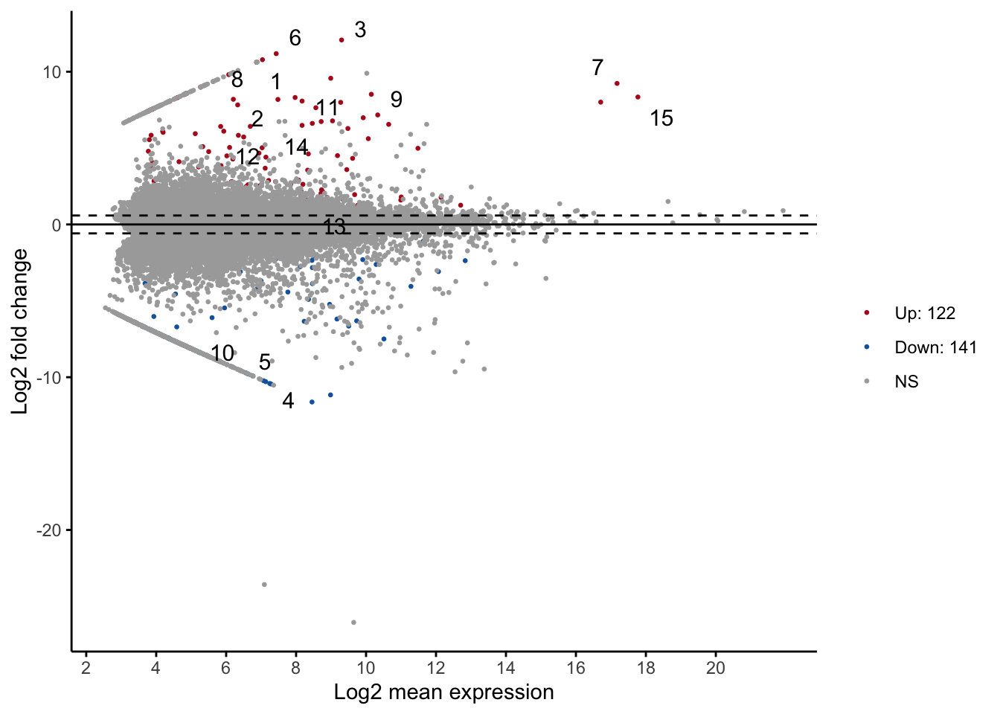
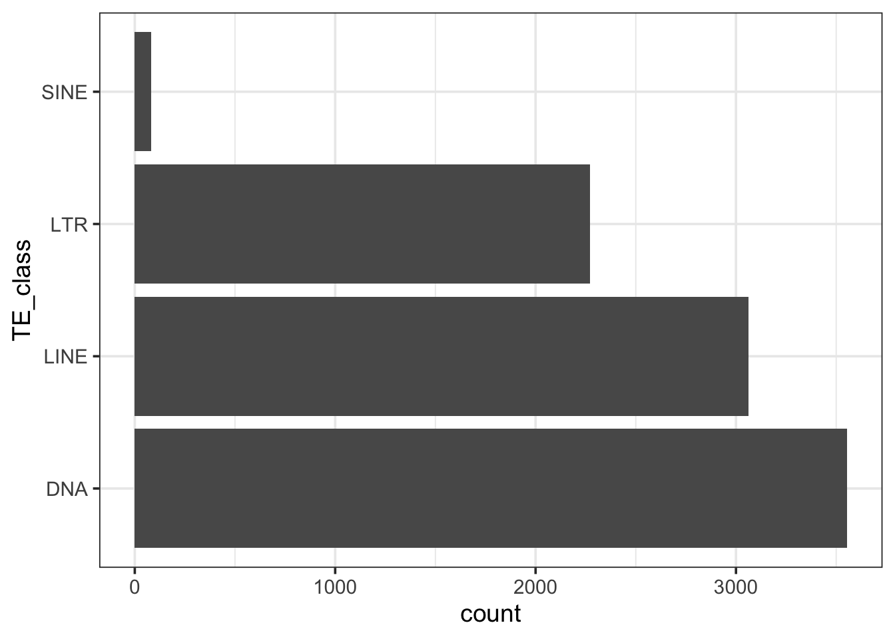
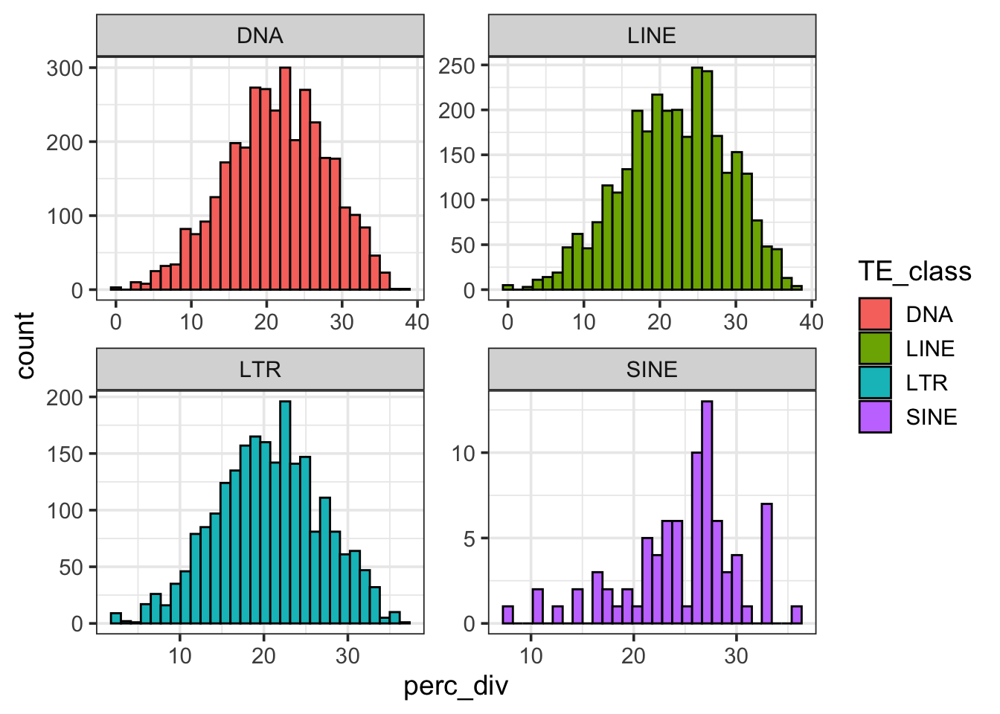

library("tidyr")
library("dplyr")
library("ggpubr")
library("stringr")
library("plyr")Bioinformatics Class Project Day 2
Introduction
Today, we will explore the differential expression (DE) analysis and the repeat masker (RM) analysis based on the assembled transcriptome.
Last time, you used Galaxy to analyzed the RNA-seq data from three queens and three workers to find differential expressed genes.
Using the same RNA-seq data, I assembled the transcriptome using a program called Trinity. Then I ran Repeat Masker to identify transposable elements (TEs) in the transcriptome.
Load libraries
DE analysis
Now that the differential expression analysis is finished on Galaxy. Download the result and examine it in R.
Let’s first load the table stored in input.matrix.Q_vs_W.DESeq2.txt. Upload this file to posit.cloud.
This file has columns separated by tabs. So we will use read.delim() instead of read.csv().
df = read.delim(file = "input.matrix.Q_vs_W.DESeq2.txt", row.names = NULL)
# rename the first column
names(df)[1] = "seqid"
# Preview the file
head(df)Now, let’s keep only rows (transcripts) that have significant padj (adjusted p-values) and have the absolute value of log2FoldChange larger than 10.
Note that fold change is calculated based on sampleA vs. sampleB.
It’s positive when baseMeanA > baseMeanB.
It’s negative when baseMeanA < baseMeanB.
Also note that the adjusted p-value is a test of whether the log2 fold change is different from 0. It is statistically different from testing whether log2 fold change > 10 or <-10. A different test could be used for that but for here, we are doing a crude post-hoc filtering.
Write some codes to make an object called df_de that keep rows from df where padj < 0.05 & abs(log2FoldChange) > 10.
# your codeUsing df_de, write some codes to check how many transcripts are up-regulated in queens and how many transcripts are up-regulated in workers. (Remember that all transcripts in df_de is statistically significantly differentially expressed because we have filtered it by padj already.)
# your codeWe can do a MA plot. But since we didn’t run DESeq2 in R, we will rely on the package ggpubr to do so.
ggmaplot(df, size = 0.5) 
# size is point sizeTo explore what genes are being up/down regulated in queens (vs. workers), we can look at the identity of some of the most up/down regulated genes. For illustration purpose, we will only look at the top one.
Because the shrimp transcriptome is not annotated, we will need to:
retrieve the seqid,
get the fasta sequence of the transcript, and
do a blast to find out what this transcript (expressed gene) could be.
(1) We can find the seqid of the most up-regulated gene and most down-regulated in queens in R.
Remember that you can sort a dataframe with arrange().
# Sorting to show the lowest log2FoldChange.
# Is this up or down regulated?
arrange(df_de, log2FoldChange) %>% head() seqid sampleA sampleB baseMeanA baseMeanB baseMean
1 comp180383_c1_seq4 Q W 0.0000000 699.5098 349.7549
2 comp181460_c0_seq1 Q W 0.5026212 1010.7706 505.6366
3 comp176503_c0_seq6 Q W 0.0000000 309.1014 154.5507
4 comp176628_c1_seq17 Q W 0.0000000 301.8550 150.9275
5 comp173370_c0_seq13 Q W 0.0000000 278.4993 139.2496
6 comp179191_c2_seq8 Q W 0.0000000 266.9005 133.4503
log2FoldChange lfcSE stat pvalue padj
1 -11.62299 3.123961 -3.720592 1.987562e-04 2.784806e-02
2 -11.15852 2.733697 -4.081843 4.467989e-05 8.772759e-03
3 -10.44506 1.714528 -6.092089 1.114469e-09 1.720196e-06
4 -10.40991 1.408855 -7.388915 1.480319e-13 9.134437e-10
5 -10.29197 1.394568 -7.380043 1.582378e-13 9.134437e-10
6 -10.23122 1.668505 -6.131971 8.679691e-10 1.473658e-06# Sorting to show the highest log2FoldChange
# Is this up or down regulated?
arrange(df_de, desc(log2FoldChange)) %>% head() seqid sampleA sampleB baseMeanA baseMeanB baseMean
1 comp180009_c0_seq2 Q W 1258.9584 0.2022983 629.58036
2 comp175226_c0_seq1 Q W 343.1854 0.0000000 171.59270
3 comp175480_c0_seq13 Q W 260.8687 0.0000000 130.43435
4 comp173370_c0_seq14 Q W 231.8312 0.0000000 115.91562
5 comp181016_c1_seq5 Q W 132.8061 0.0000000 66.40304
6 comp164452_c0_seq1 Q W 1013.5418 1.3837382 507.46276
log2FoldChange lfcSE stat pvalue padj
1 12.075260 1.541190 7.835023 4.687565e-15 4.509906e-11
2 11.180387 1.548011 7.222422 5.106982e-13 2.456714e-09
3 10.785645 3.047203 3.539523 4.008503e-04 4.552410e-02
4 10.614133 1.565590 6.779636 1.204793e-11 4.346743e-08
5 9.810545 1.613226 6.081320 1.191973e-09 1.720196e-06
6 9.570938 1.743204 5.490428 4.009611e-08 3.403806e-05(2) Copy each seqid to search in Elizabethae_Assembly_Trinity.fasta. You can do that in Galaxy:
Use the tool
Filter FASTA on the headers and/or the sequences.Under
FASTA sequences, chooseElizabethae_Assembly_Trinity.fasta.Under
Criteria for filtering on the headers, chooseRegular expression….Paste the seqid in the text box under
Regular expression pattern.(Alternatively, you can also download the assembly from Galaxy, open it in NotePad, and search.)
(3) Copy that fasta sequence and do a blastx search against the refseq protein. What protein is this transcript most likely to be coding for?
Do a Google search using the name of the protein and the keyword “eusociality”. Is this protein related to eusociality?
RM analysis
Let’s read Elizabethae_Assembly_Trinity.fasta.out, which is the output from Repeat Masker. Download the file here and upload it to posit.cloud.
Repeat Masker was used to identify TEs from the transcriptome. Similar to Day 16, we will perform a few housing keeping fixes after loading the file.
df_transcript_te = read.table("Elizabethae_Assembly_Trinity.fasta.out", header = F, skip = 3, fill = T ,col.names = c("SW_score", "perc_div", "perc_del", "perc_inc", "seqid", "start", "end", "left", "strand","repeat", "TE_class_family", "TE_start", "TE_end", "TE_left", "ID", "duplicate"), )
# Some columns have numbers in () that needs to be removed.
df_transcript_te$left = gsub("[()]","",df_transcript_te$left)
df_transcript_te$TE_start = gsub("[()]","",df_transcript_te$TE_start)
df_transcript_te$TE_left = gsub("[()]","",df_transcript_te$TE_left)
# remove duplicates generated by Repeat Masker
df_transcript_te = filter(df_transcript_te, !duplicate=="*")
# keep first entry for each seqid
df_transcript_te = group_modify((group_by(df_transcript_te, seqid)), ~.x[1,])
# get TE_class & TE_family from TE_class_family
df_transcript_te$TE_class = str_split(df_transcript_te$TE_class_family, "/", simplify= T)[,1]
df_transcript_te$TE_family = str_split(df_transcript_te$TE_class_family, "/", simplify= T)[,2]
# Keep only the four major classes of TE (DNA, LINE, LTR and SINE).
df_transcript_te = filter(df_transcript_te, TE_class%in%c("DNA", "LINE", "LTR", "SINE"))
head(df_transcript_te)# A tibble: 6 × 18
# Groups: seqid [6]
seqid SW_score perc_div perc_del perc_inc start end left strand repeat.
<chr> <int> <dbl> <dbl> <dbl> <int> <int> <chr> <chr> <chr>
1 comp1002… 263 22.4 2.1 3.1 116 212 0 + rnd-4_…
2 comp1003… 330 13.7 2.9 5.9 133 202 40 + hAT-N2…
3 comp1007… 234 23.6 4.5 0 132 148 73 C L2-8_N…
4 comp1008… 250 25.7 6.7 0 90 194 75 C rnd-6_…
5 comp1008… 339 9.1 0 0 1 44 158 C family…
6 comp1008… 288 17.1 4.8 1.2 172 183 71 + L2-10_…
# ℹ 8 more variables: TE_class_family <chr>, TE_start <chr>, TE_end <int>,
# TE_left <chr>, ID <int>, duplicate <chr>, TE_class <chr>, TE_family <chr>The start and end columns indicate where a TE is found in a transcript sequence. The name of the transcript is in seqid, which can later be matched with those in df_de.
Write some codes to make a new column TE_length as the absolute difference in start and end plus 1.
# Your code
# checking the column TE_length should give you what's shown below.
# summary(df_transcript_te$TE_length) Min. 1st Qu. Median Mean 3rd Qu. Max.
11.0 54.0 74.0 114.9 121.0 2842.0 Let’s look at the TE distribution in the shrimp transcriptome. It’s very different from humans, which we looked at before.
# Plot TE distribution
ggplot(df_transcript_te, aes(TE_class)) +
geom_bar() +
coord_flip() +
theme_bw(base_size=14) 
We can also look at the distribution of perc_div across TE class. Note that this is only TEs that are in the transcriptome. It doesn’t reflect all the TEs that are in the shrimp genome.
# Plot divergence facet
ggplot(df_transcript_te, aes(perc_div, fill=TE_class)) +
geom_histogram(colour="black") +
theme_bw(base_size=14) +
facet_wrap(~TE_class, scales = "free")`stat_bin()` using `bins = 30`. Pick better value with `binwidth`.
Finally, We can also check what’s the youngest element in each TE class, similar to your assignment in Day 16. We can do it with a ddply loop:
ddply(df_transcript_te, "TE_class", function(i){
ddply(i, "TE_family", function(x){
data.frame(median = median(x$perc_div))
}) %>%
arrange(median) %>%
.[1,1]
}) TE_class V1
1 DNA TcMar-ISRm11
2 LINE RTE-ORTE
3 LTR Gypsy?
4 SINE tRNA-CoreNext week, we will do some demo analyses after combining the DE and RM data set. Then you’ll be assigned to work on similar analyses using one of the TE class.